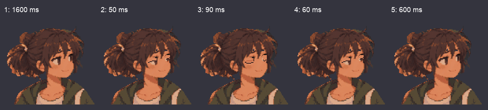

Native 1×
Integer zoom 2×
Five actual Aseprite exports. Fixed 120×112 grid; only the eye layer moves. Zero root travel.
Loading actual exports…
Native 1×
Integer zoom 2×
Displayed-frame events, newest last (elapsed preview time):
Filmstrip for pose inspection; played review above is separate. No combat/contact or Godot validation.
